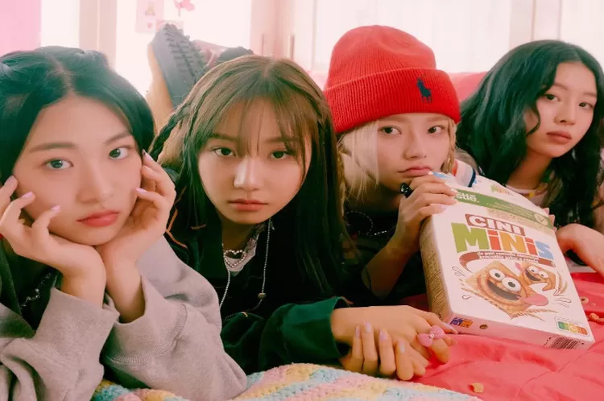
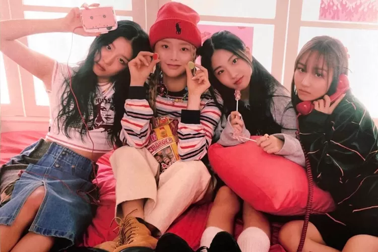
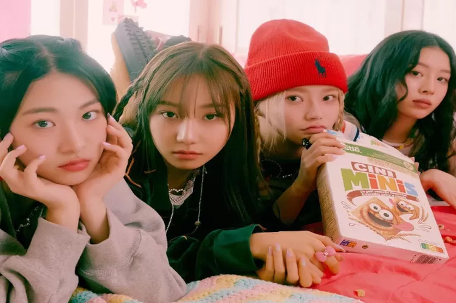
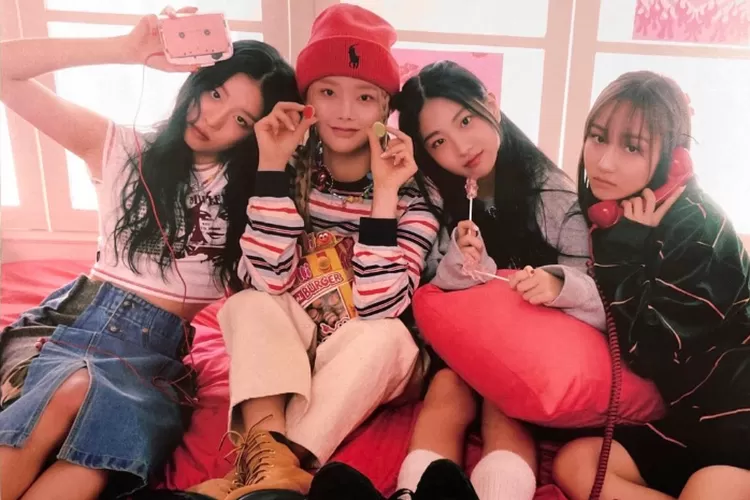

Ratnaning Asih - Luputan6
26 Jun 2023, 17:00 WIB
Liputan6.com, Seoul - Siapa sih warganet yang belum pernah dengar lagu “Cupid” dari Fifty Fifty? Walau tidak pernah dengar
secara keseluruhan, setidaknya bagian chorus lagu tersebut sudah tak asing, karena selama beberapa waktu belakangan
seliweran di berbagai media sosial.
Popularitas “Cupid” jelas meroketkan nama Fifty Fifty, mulai dari masuk tangga lagu Bilboard hingga terlibat
dalam pembuatan soundtrack film Barbie. Ini adalah cerita sukses yang jarang terjadi di jagat K-Pop, untuk grup
yang berasal dari agensi relatif kecil.
Hanya saja, tampaknya kesuksesan ini belakangan menjadi bumerang bagi sang agensi, Attrakt (nama resmi ditulis
seluruhnya dalam huruf kapital). Menurut pihak agensi, ada pihak ketiga yang hendak membajak Fifty Fifty.
Hal ini pertama terungkap dalam penjelasan pihak Attrakt pada 23 Juni 2023 lalu. Dilansir dari Soompi, perwakilan
agensi kala itu menjelaskan alasan mengapa Fifty Fifty jarang melakukan aktivitas promosi, padahal mereka meraih
kesuksesan global. Pihak agensi menjelaskan, bahwa awalnya Fifty Fifty rehat karena salah satu membernya
mengalami gangguan kesehatan. Sembari mengistirahatkan para personel grup ini, agensi memutuskan untuk bersiap
diri untuk menggelar kegiatan grup ini pada masa mendatang. “Namun di tengah persiapan yang dilakukan dengan tekun,
kami menemukan pihak eksternal yang mendekati artis agensi kami dan membujuk mereka untuk melanggar kontrak
eksklusif mereka dengan kami,” kata pihak Attrakt.

Ratnaning Asih - Liputan6
26 Juni 2023, 17:00 WIB
Dalam pernyataan ini, Attrakt menjelaskan bahwa meski mereka adalah agensi kecil, pihaknya tak
takut untuk memperjuangkan diri. Termasuk untuk mengambil langkah hukum Sehari setelahnya,
CEO Attrakt Jeon Hong Joon, mengatakan dirinya akan mempertahankan martabat dan menghadapi sengketa ini.
Ia juga membuka pintu lebar-lebar untuk anggota Fifty Fifty yakni Saena, Aran, Keena, dan Sio.
"Saya berharap mereka akan kembali secepat mungkin ke agensi mereka, dan secara bertahap maju
dalam proyek yang sedang kami persiapkan, seperti promosi ke Amerika,” kata dia.

Ratnaning Asih - Liputan6
26 Juni 2023, 17:00 WIB
Perkembangan terakhir, pada hari ini Senin (26/6/2023), Jeong Hong Joon menyebut bahwa pihak yang ingin membajak Fifty
Fifty adalah Warner Music Korea. “Kami telah memperoleh bukti material mengenai upaya nyata merebut anggota
Fifty Fifty secara ilegal. Kami meminta Warner Music Korea membuat penjelasan dan pernyataan seperti apa persisnya
posisi resmi mereka,” begitu isi pernyataan Attrakt.

Dalam pernyataan ini, Attrakt menjelaskan bahwa meski mereka adalah agensi kecil, pihaknya tak takut untuk memperjuangkan diri. Termasuk untuk mengambil langkah hukum Sehari setelahnya, CEO Attrakt Jeon Hong Joon, mengatakan dirinya akan mempertahankan martabat dan menghadapi sengketa ini. Ia juga membuka pintu lebar-lebar untuk anggota Fifty Fifty yakni Saena, Aran, Keena, dan Sio. "Saya berharap mereka akan kembali secepat mungkin ke agensi mereka, dan secara bertahap maju dalam proyek yang sedang kami persiapkan, seperti promosi ke Amerika,” kata dia.
Ratnaning Asih - Liputan6
26 Juni 2023, 17:00 WIB
Dalam pernyataan ini, Attrakt menjelaskan bahwa meski mereka adalah agensi kecil, pihaknya tak takut untuk memperjuangkan diri. Termasuk untuk mengambil langkah hukum Sehari setelahnya, CEO Attrakt Jeon Hong Joon, mengatakan dirinya akan mempertahankan martabat dan menghadapi sengketa ini. Ia juga membuka pintu lebar-lebar untuk anggota Fifty Fifty yakni Saena, Aran, Keena, dan Sio. "Saya berharap mereka akan kembali secepat mungkin ke agensi mereka, dan secara bertahap maju dalam proyek yang sedang kami persiapkan, seperti promosi ke Amerika,” kata dia.

Perkembangan terakhir, pada hari ini Senin (26/6/2023), Jeong Hong Joon menyebut bahwa pihak yang ingin membajak Fifty Fifty adalah Warner Music Korea. “Kami telah memperoleh bukti material mengenai upaya nyata merebut anggota Fifty Fifty secara ilegal. Kami meminta Warner Music Korea membuat penjelasan dan pernyataan seperti apa persisnya posisi resmi mereka,” begitu isi pernyataan Attrakt.
Ratnaning Asih - Liputan6
26 Juni 2023, 17:00 WIB
Perkembangan terakhir, pada hari ini Senin (26/6/2023), Jeong Hong Joon menyebut bahwa pihak yang ingin membajak Fifty Fifty adalah Warner Music Korea. “Kami telah memperoleh bukti material mengenai upaya nyata merebut anggota Fifty Fifty secara ilegal. Kami meminta Warner Music Korea membuat penjelasan dan pernyataan seperti apa persisnya posisi resmi mereka,” begitu isi pernyataan Attrakt.